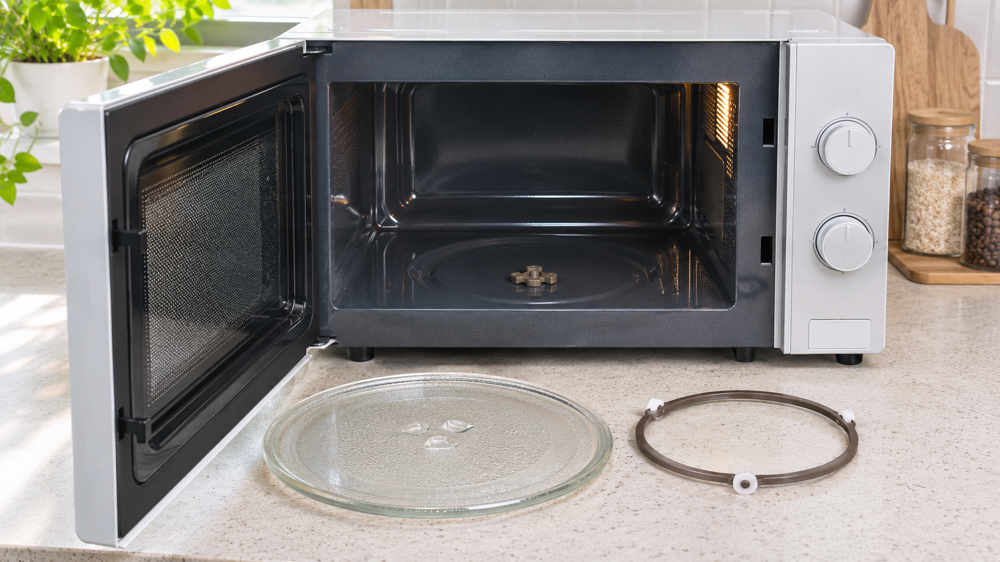

전자레인지 소음이 갑자기 커졌다면 회전판과 롤러 링의 위치, 음식 용기의 흔들림, 내부 이물을 먼저 확인하세요. 스파크·탄 냄새·금속 마찰음이 있으면 즉시 정지하고 플러그를 뽑아야 합니다.
| 소리 | 확인 |
|---|---|
| 덜컹거림 | 회전판·롤러 링·용기 |
| 웅 하는 일정한 소리 | 정상 작동음 가능 |
| 긁힘·금속음 | 즉시 중단 |
| 지지직·스파크 | 금속·오염·부품 손상 |
빈 상태로 작동하거나 금속 용기를 넣거나 외함을 분해하지 마세요.
소음이 크거나 가열이 약하고 냄새·스파크가 동반되면 점검받으세요. 회전판 불량과 불꽃 발생 대처법도 참고하세요.
제품별 차이가 있으므로 제조사 공식 사용설명서와 고객지원 안내를 우선 확인하세요.